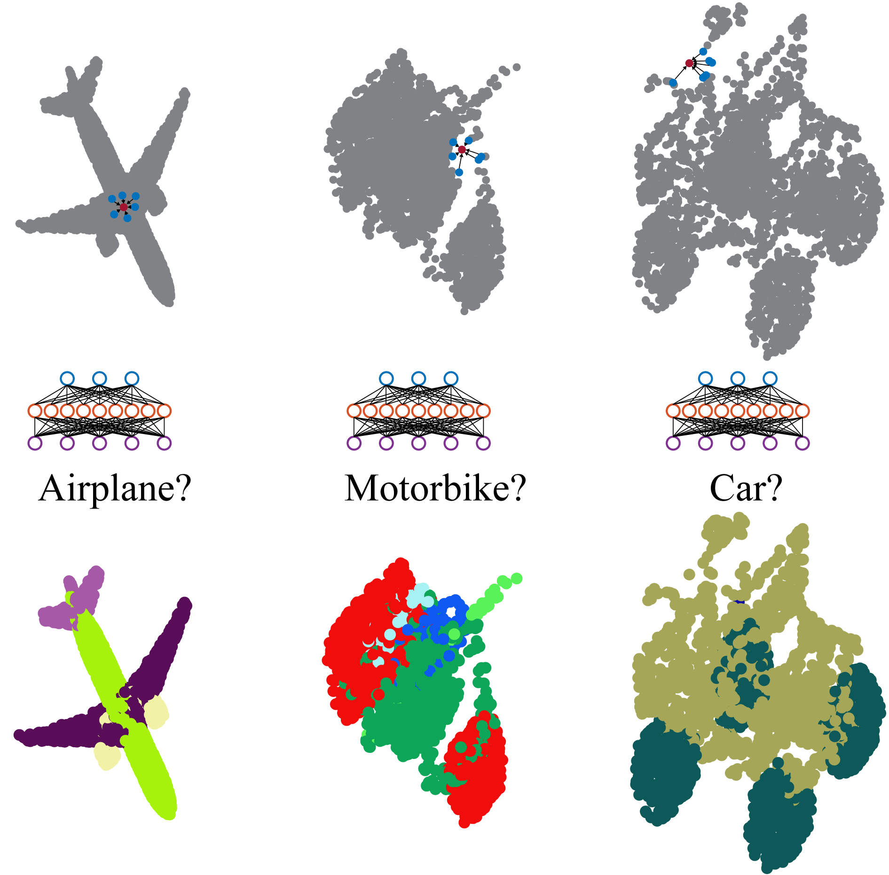

Email: kuangen.zhang@alumni.ubc.ca
Github: https://github.com/KuangenZhang
Google scholar: https://scholar.google.com/citations?user=s7IceKkAAAAJ&hl=en
Papers:
K. Zhang, W. Zhang, W. Xiao, H. Liu, C. W. de Silva, and C. Fu, “Sequential decision fusion for environmental classification in assistive walking,” arXiv:1904.11152 [cs], Apr. 2019.
Accept, Transactions on Neural Systems & Rehabilitation Engineering
Code and data (processing): https://github.com/KuangenZhang/HMM-decision-fusion
K. Zhang, J. Wang, and C. Fu, “Directional pointnet: 3D environmental classification for wearable robotics,” arXiv:1903.06846 [cs], Mar. 2019.
- Accept, Instrumentation
- Code and data (processing): https://github.com/KuangenZhang/Directional-pointnet

K. Zhang, M. Hao, J. Wang, C. W. de Silva, and C. Fu, “Linked dynamic graph cnn: learning on point cloud via linking hierarchical features,” arXiv:1904.10014 [cs], Apr. 2019.
Under review, IEEE Transactions on Visualization and Computer Graphics
Code and data: https://github.com/KuangenZhang/ldgcnn

K. Zhang, C. W. de Silva, and C. Fu, “Sensor fusion for predictive control of human-prosthesis-environment dynamics in assistive walking: a survey,” arXiv:1903.07674 [cs], Mar. 2019.
K. Zhang, C. Xiong, W. Zhang, H. Liu, D. Lai, Y. Rong, and C. Fu, “Environmental features recognition for lower limb prostheses toward predictive walking,” IEEE Transactions on Neural Systems and Rehabilitation Engineering, vol. 27, no. 3, pp. 465–476, Mar. 2019.
- Code and data: https://github.com/KuangenZhang/Environmental-classification
- J. Wang and K. Zhang, “Unsupervised Domain Adaptation Learning Algorithm for RGB-D Staircase Recognition,” arXiv:1903.01212 [cs], Mar. 2019.
K. Zhang, J. Xu, H. Chen, J. Zhao, and K. Chen, “Jamming analysis and force control for flexible dual peg-in-hole assembly,” IEEE Transactions on Industrial Electronics, vol. 66, no. 3, pp. 1930–1939, 2019.

J. Xu, Z. Hou, W. Wang, B. Xu, K. Zhang, and K. Chen, “Feedback deep deterministic policy gradient with fuzzy reward for robotic multiple peg-in-hole assembly tasks,” IEEE Transactions on Industrial Informatics, 2018.
Z. Hou, M. Philipp, K. Zhang, Y. Guan, K. Chen, and J. Xu, “The learning-based optimization algorithm for robotic dual peg-in-hole assembly,” Assembly Automation, vol. 38, no. 4, pp. 369–375, Sep. 2018.
Z. Hou, H. Dong, K. Zhang, Q. Gao, K. Chen, and J. Xu, “Knowledge-driven deep deterministic policy gradient for robotic multiple peg-in-hole assembly tasks,” in 2018 IEEE International Conference on Robotics and Biomimetics (ROBIO), 2018, pp. 256–261.
K. Zhang, M. Shi, J. Xu, F. Liu, and K. Chen, “Force control for a rigid dual peg-in-hole assembly,” Assembly Automation, vol. 37, no. 2, pp. 200–207, Apr. 2017.